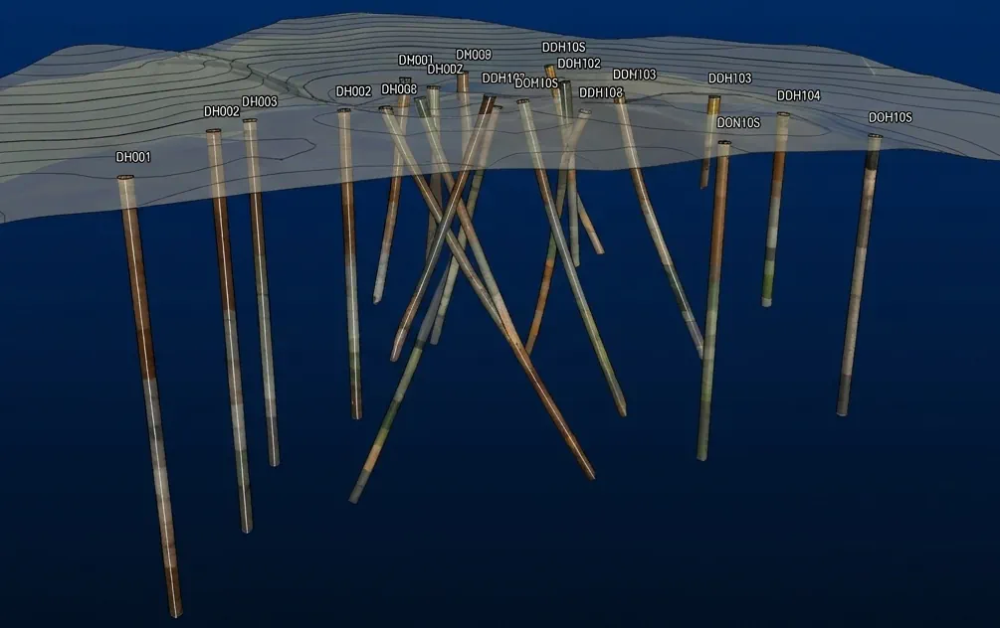
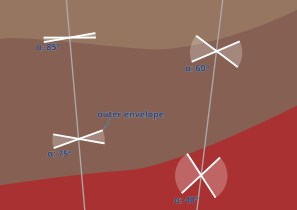

Leapfrog + PostgreSQL drilling workflow
Rebuilding a stalled geologic model, and the database layer beneath the tool
Geologic modelling and database workflow for Ivanhoe Electric, Santa Cruz.
Context
This is a porphyry copper system near Santa Cruz, Arizona, modelled for Ivanhoe Electric in Leapfrog. I didn’t build the original – I was brought in to keep it updated as the drilling campaign ramped up, daily revisions against incoming holes. By then several geologists had worked it over several years, and it had reached the state long-running models reach: increasingly hard to maintain, because the early decisions needed overriding and the way it had been built made overriding them expensive. The work shown here is reproduced with synthetic data – the structure and the reasoning are real, the numbers are not.
The tool had known structural limits, and two of them drove everything that follows. It couldn’t, on its own, rebuild a model that had grown too tangled to patch. And it couldn’t record why a decision had been made – which costs nothing while the model lives in one geologist’s head, and a great deal once it doesn’t. Then the unwritten reasoning becomes the bottleneck. “Why were those polyline edits added there – are they still needed, can I delete them? Why was that interval reclassified, who did it, when?” The model held the geometry but not the answers.
So the work split across two fronts. One was the modelling architecture – how the geology was decomposed into models that could be rebuilt rather than hand-repaired. The other was the database beneath the tool, where the multi-table logic and the provenance lived. That database wasn’t built from scratch: the project ran on Rogue Geoscience’s PostgreSQL schema, already in use across other jobs, and the work here was extending it to do what this model needed. Different problems, one instinct underneath: compute and derive what you can, hand-maintain only what you must, and make the manual edits that remain deliberate and legible.
Modelling architecture
The trigger was a change request, and not a small one. The client wanted to add more faults, widen the model to take in a new area, bring in new units, and revise the sequencing relationship between the faults and the sediments. Any one of those is routine. Together, on the existing build, they weren’t.
The old model couldn’t absorb the change cheaply. It was a single model where the faults crosscut everything, so each new fault raised the maintenance cost of every surface it touched – and revising the fault-sediment sequencing meant reworking relationships that were threaded through the whole thing. The model didn’t need another fault patched in. It needed rebuilding.
The rebuild separated the modelling concerns. Rather than one model holding everything, the geology split into federated models – one for the faults, one for the bedrock interface (BRI), one for the bedrock units, a standalone model for the basalt dikes, and several valley-fill models, each isolating a problem the others didn’t have to know about. The point wasn’t tidiness – each model could now be regenerated on its own, without dragging the rest through a costly rebuild it didn’t need.
The BRI shows it best. It had been unioned from all the bedrock-unit volumes, which meant its geometry depended on checking and dissolving millions of coincident triangle faces – and about half the time it failed, throwing triangulation errors that required rerunning the whole regeneration with a minor millimetre resolution adjustment and a flip of a coin.
Rebuilt as its own model, the contiguous BRI surface reprocessed in about a minute instead of roughly an hour.
The geometry it produces is a union of the fault-block volumes minus their eroded tops, which produces one contiguous surface that carries the fault scarps along with it. Downstream operations – eg. geotech, resource modelling – needed that surface whole, fault-scarps included, so the contiguity wasn’t cosmetic.
Three instruments controlled these surfaces, each picking up where the last ran out. The interval table is the routine one – fine for modern drilling, where the logged contacts can be trusted to sit where the data says. It’s the historic drilling that needs more: older holes with less reliable surveying and litho logs that were never recoded into the newer interpretation. For those, the bedrock interface was logged by hand into the model_points table – a downhole point marking the top of bedrock where the interval data couldn’t be relied on to find it.
The fault contacts went into the same model_points table. A fault contact isn’t logged directly the way a lithology boundary is – it’s interpreted, read off the surrounding data: RQD, assays, rocktypes, logged colours, core imagery. Where a geologist judged a fault to cross the hole, the contact went into model_points as a downhole point, including the legacy holes and the cases where a contact is missing and its absence is itself information.
Those edits were segmented by purpose, not dumped into one object – geophysics-derived elevations in one, consistent step-fault offsets in another, max/min constraints in a third, with comment-and-date discipline encouraged on each. That’s separation of concerns, and it helps the next person read what an edit was for. It also did real work: the edits were shared objects, inherited by multiple surfaces rather than redrawn for each – so when the change request added five new faults, the surfaces they generated picked up the right edits automatically, without anyone re-tracing them. The same instinct as everywhere else here – define the thing once, let it propagate, keep the manual state minimal.
This isn’t an audit trail. The discipline is manual, and the real provenance record lives in the database, not here.
The idealised cross‑section below shows why the deposit has to be broken into parts. Revealing the section step by step – faults, BRI, bedrock, dikes, valley fill – illustrates how much complexity a single model would be trying to hold. Faults are built first not because they’re oldest – they aren’t – but because in Leapfrog they define the blocks the older units have to be modelled within. Build order is a tool constraint, not a geological sequence.
Legend
Faults
Alluvium
Gila Conglomerate
Lake Sediments
Whitetail Conglomerate
Bedrock Colluvium
Mafic Conglomerate
Basal Conglomerate
Basalt Dikes
Porphyry
Diabase Dikes
Oracle Granite
The database layer
For the most part, Leapfrog modelled the geometry well enough. The two things it couldn’t do are the two a long project needs most: reason across several tables at once, and remember why a decision was made. It reads drillhole data, but it won’t compute a derived classification from the overlap of three other tables, and it has no native place to record that an interval was reclassified, by whom, or on what grounds.
So the database carried what the tool couldn’t. The drilling data sat in PostgreSQL, and a layer of derived VIEWs sat between the raw tables and Leapfrog. The keystone was lf_lith: one flat table, assembled on the fly, that Leapfrog could consume as a single lithology source while the work of combining several tables happened underneath it, in SQL, where it was legible and reproducible.
NoteWhat
lf_lith computes
lf_lith is a VIEW, not a stored table – it recomputes every time Leapfrog reads it, so the source tables stay the single point of truth. Its derived columns do the work that would otherwise be manual or impossible for Leapfrog to do on its own:
group_lith– a coarser reclassification of the logged codes into broader units, for modelling at group level.*_interp– a set of reclassified-lithology columns (basalt_interp,diabase_interp,porphyry_interp, and others), each set frommodel_intervalswhere a geologist can override the logged code for an interval – usually to separate distinct layers or dikes so each models cleanly – without touching the original log.hexRGB– the blended logged colours as a single hex value – computed by the colour-blend function overcolour_lookup, so the logged colour can display in 3D alongside other data – Leapfrog can’t render the named colours directly.fault– anabove_/below_code, set from where the interval falls against fault-contact points inmodel_points. This is what keeps fault-boundary contacts from contaminating the surfaces they sit on.ignore/ignore_comment– a flag and a reason, pulled from the ignore table, marking intervals to be ignored from the model and saying why.
The fault column is the clearest case of the database doing what the tool couldn’t. A drillhole crossing a fault logs a contact at the fault plane – but that contact belongs to the fault, not to the lithological surface the modeller is trying to constrain. Fed in naively, it drags the surface toward the fault and distorts it. The fix is a filter: each interval is coded above_ or below_ the relevant fault from its overlap with the fault-contact points recorded in model_points, and the surface is informed only by the points on the correct side. The contaminating intervals don’t get deleted – they get classified, and excluded from the relevant modelled surfaces.
model_points table records the fault pick
| holeid | depth | type | code | comment | … |
|---|---|---|---|---|---|
| SC-123 | 431.6 | fault |
Fault-04 |
from RQD logs | … |
lf_lith reads the fault depth and codes the intervals on either side of it
| holeid | from | to | major_lith | fault |
… |
|---|---|---|---|---|---|
| SC-123 | 425.0 | 431.6 | OracleGranite | above_Fault-04 |
… |
| SC-123 | 431.6 | 445.0 | OracleGranite | below_Fault-04 |
… |
The same granite, logged continuously through the hole, split into two coded intervals by the fault pick sitting between them. When Leapfrog models a surface from this table, a single clause does the filtering: WHERE fault IS NULL drops both coded intervals, leaving only the intervals no fault runs through.
The intervals do interpolation work of their own, which is why this beats dropping a single contact point. Each one typically comes with volume points – distance values that push or pull the interpolated surface, so an interval left in on the wrong side of a fault doesn’t just add a stray contact, it drags the surface across the fault toward data that belongs to the other block. Coding the whole interval, not just the pick, is what keeps that from happening.
The ignore column works the same way. An interval flagged in model_ignore – bad recovery, suspect logging, a historic hole with questionable survey data – gets an ignore code and an ignore_comment saying why. In Leapfrog, AND ignore IS NULL drops it. One filtering idiom, applied to two different problems: don’t delete the questionable data, code it, and let a WHERE … IS NULL clause decide what the model sees. The raw log stays intact and the reason stays attached.
The interpretation tables hold their own provenance. Every row records who made the edit, when, why, and how confident they were – and rows are deactivated rather than deleted, so another geologist’s interpretation can be switched off, tested against, or restored without destroying it. Leapfrog offers nothing comparable: an edit made inside a Leapfrog project is overwritten the next time the drilling reloads, and nothing records who made it or what it said. This is the answer to the questions the old model couldn’t hold – why was that interval reclassified, who did it, when.
model_intervals – every interpretation records its author, its date, its reasoning, and a confidence grade. Deactivated rows stay in the table.
| holeid | from | to | type | code | confidence | comment | active | updated_by | updated_at |
|---|---|---|---|---|---|---|---|---|---|
| SC-84 | 452.0 | 458.5 | diabase | dike-25 | 4 | re-examined core imagery | FALSE | j-smith | 2022-03-14 |
| SC-123 | 514.2 | 517.1 | colluvium | float | 1 | granite with sediment intervals below | TRUE | z-hynd | 2023-10-01 |
| SC-144 | 627.4 | 628.5 | basalt | dike-03 | 2 | assuming ~170/90 orientation | TRUE | z-hynd | 2023-09-26 |
Easier to interpret, not just maintain
Two builds nobody asked for. Both started as questions – could the database make the model easier to interpret, not just easier to maintain – and both turned out useful enough to keep. They sit outside the original brief.
Colour blend
Core is logged with named colours, not hex – “Dark Brown”, “Light Grey”, and so on, up to six per interval across major, minor, and streak. Leapfrog can’t render a named colour, so by default the logged colour never makes it into 3D, and a geologist scanning the model loses one of the cues they’d use at the core tray.
So the database supplied it. A lookup table, colour_lookup, paired every colour name that appears in the lithology log with a suitable hex value. The blend function then took the up-to-six colours on an interval and combined them into a single hexRGB, weighted so the major colour dominates and the streak only tints – the same priority a geologist reads them in. The interval then renders in 3D as close to its logged colour as a single value allows.

Alpha-only structure
Oriented core gives two angles: alpha, the dip of a plane relative to the core axis, and beta, its rotation around that axis. Alpha alone fixes a cone the plane could lie on; beta is what pins it to a single orientation. A lot of structural logging, especially older logging, records alpha and no beta – which leaves the measurement real but unplottable. Leapfrog needs both, so these data just throw table errors.
Beta is measured from a fixed reference on the core – usually a line marked along the bottom of the hole. No reference line, no beta.
With alpha but no beta, the true plane sits somewhere on a cone of possible orientations – so rather than discard the measurement, the lf_alpha_only VIEW reconstructs the cone. It fans roughly ten synthetic beta values around the circle for each alpha-only measurement, each offset about a millimetre in depth to dodge the duplicate-point flag Leapfrog raises on coincident points. In 3D the fan stands as an hourglass – view-only, never feeding a surface – and set beside the properly oriented structures and the modelled contacts nearby, it lets a geologist judge by eye whether a surface’s orientation is validated by the structural measurements.
The figure below shows the idea in section: two drillholes cutting a set of bedding structures logged with alpha but no beta, each hourglass the same cone construction sliced flat.

Reflection
The two halves of this don’t quite sit equally.
The model split was the right call. A build that couldn’t absorb a change request got rebuilt into separate models that could each be regenerated on their own – the failing BRI went from a roughly hour-long regeneration (that had to be restarted half the time), to about a minute, by isolating the concern that was breaking. That’s a clean win. Faced with the same problem again, the same decision.
The database layer is one I’m slightly conflicted about. It solved the problems that mattered – the multi-table logic Leapfrog couldn’t do, the provenance it couldn’t keep – and solved them well. But it solved them by extending the schema underneath the tool, and an extended schema is still a thing the next person has to learn. The work here – the fault-contact filter, the model_ignore table, the model_intervals reclassification, the colour-blend function, the alpha-only VIEW – was built onto Rogue Geoscience’s PostgreSQL schema, not invented from scratch, and that cuts both ways. The standard conventions give anyone who’s worked a Rogue database a head start; the bespoke parts – the alpha-only cone reconstruction among them – are the ones with no precedent to lean on. Better than the unmaintainable single model it replaced, but not free.
I’d still build it. The provenance problem was real and compounding, and on a multi-year, multi-geologist project the cost of not solving it lands on exactly the people least equipped to absorb it – whoever picks the model up after the person who held it in their head has gone. But the trade-off is real and I’d rather name it than dress it up: I traded a tool anyone can open for a system someone has to learn. On this project that was the right trade. It isn’t always.